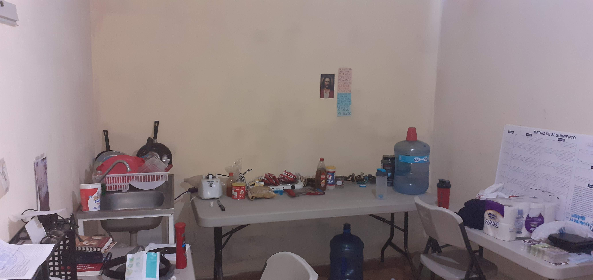
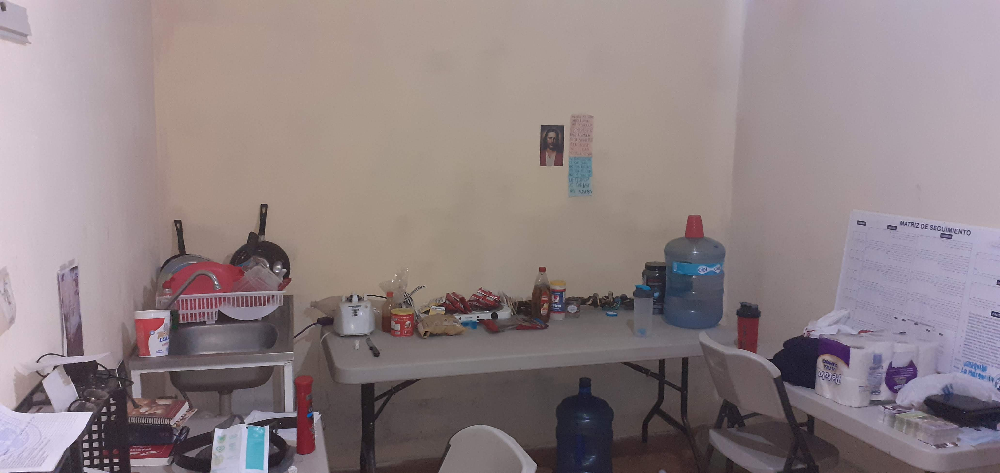
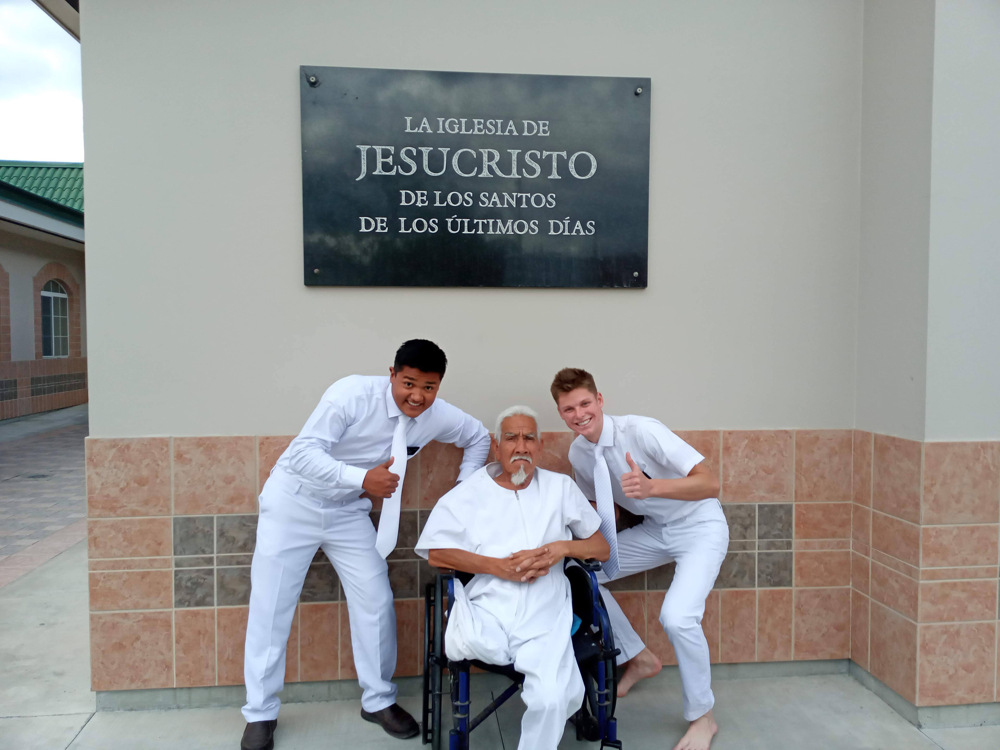
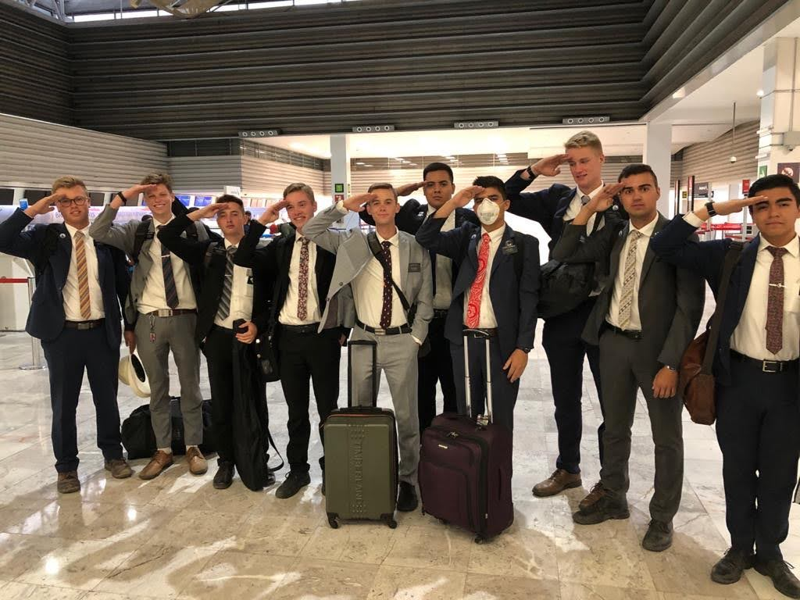
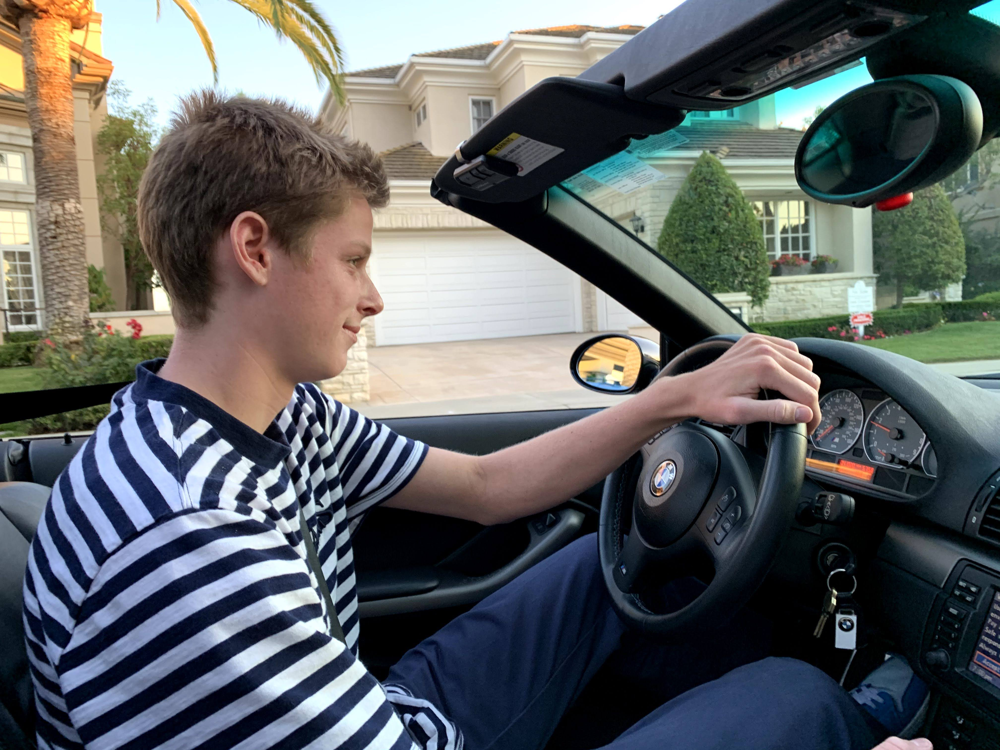
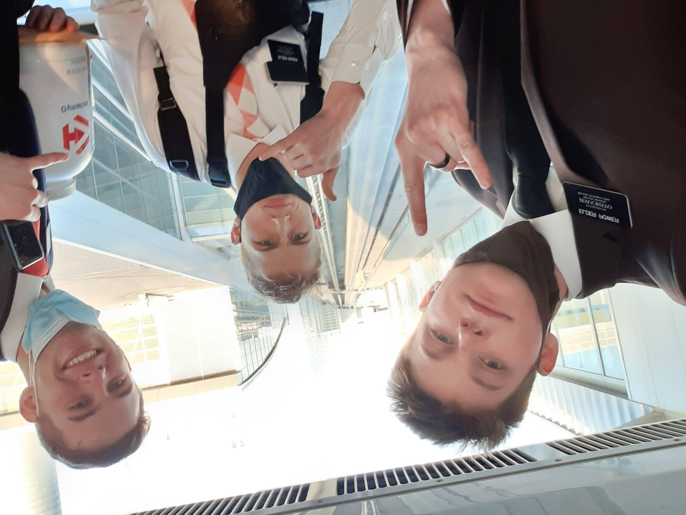
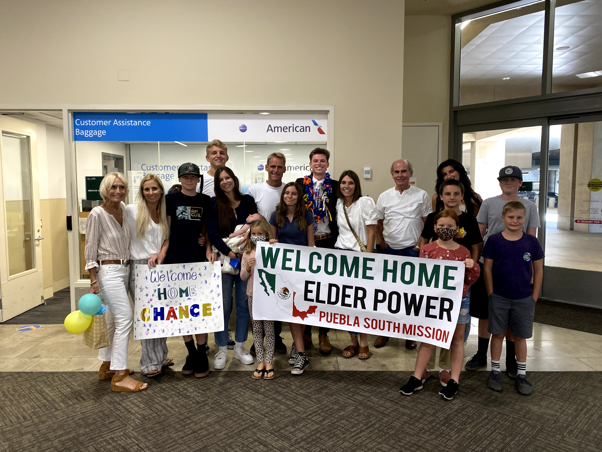

My Mission
Back in the spring of 2019 I decided to serve a mission for The Church of Jesus Christ of Latter-day Saints. This would mean that I would leave my family for 2 years in order to teach others about Christ and serve them. I submitted my mission papers and around April of 2019 I opened up my mission call. I was called to serve in the Mexico Puebla South Mission. I was incredibly excited. Words cannot describe. I was assigned to report to the Mexico City Missionary Training center on September 3, 2019.
I got to Mexico City and it was a full swing of emotions, I was in Mexico City, one of the most dangerous places in the world, I had no form of talking to my family, and I was trying to learn a language that made no sense to me. I was there for 6 weeks and made some amazing friends, but it was truly very hard.

After the 6 weeks in the MTC were over I finally made it to Puebla. Puebla is the next sate over from the state of Mexico City. It sits at about 7,000 feet above sea level. It has a nice temperate weather (depending on where you are at) and has a nice big active Volcano that you can see. It is beautiful. My first area that I was assigned to serve in was called "La Margarita" in the city. It was very hard to adjust and learn spanish, but I got the hang of it right after a while. We lived in a very humble house that was literally made of cinder blocks that was built above the house of a local member of the church. I had an amazing trainer from Colorado named Evan Bartholio. He was great and he made a huge impact on my life. During those 12 weeks together we talked to thousands of people and made some amazing friends, and helped so many people come unto Christ.
 

After those 12 weeks. I got a new companion named Zeniff Iglesias from Tamaulipas, Mexico. He had lived in the United States for about 8 years, therefore he knew how to speak english very well. His Uncle was in the Cartel and their family was forced to leave to another part of Mexico because of that. He was one of my favorite companions. When he spoke spanish he was so mature, but when he spoke english it was like the kid was 12. It was like he was two different people. When I was with Elder Iglesias we found Ramon. Ramon was about 70 years old an he was in a wheeled chair, because both of his legs were amputated due to diabetes. He had no family and needed so much help. We taught him about Jesus Christ and the plan that God has for us and he started crying and instantly came to accept it. He was baptized 8 days later. We then got to take him to the temple in Mexico City to do baptisms for his parents. It was so special and I miss him so much!
After my 18 weekns in La MArgarita I got my transfer calls. It was to a very far off "pueblito" or little town out in the middle of the desert called Acatlán de Osorio. It was a 4 hour bus ride away and it was very hot. I was sweating constantly. This area was a very hard one, but we met Martha! An amazing women who worked with a local member of the church and wanted to be taught about the Gospel. Right as we were teaching her COVID started and we had no idea what was coming.
Shortly after the baptism of Martha we found out the pandemic had gotten so bad that all countries were starting to shut their borders and we would have to return back to the United States and wait for reassignments to finish out our missions. It was crazy to go home after 7 months of not seeing my family.
I was home for about 5 months waiting to get reassigned. I finally received my reassignment to The New York Syracuse Mission. While I was at home I got to enjoy time with my family and I worked.
On September 14, 2020 I finally made it to New York. I was assigned to serve in Watertown which is about 30 minutes south of Canada. It is very cold up there and located right next to one of great lakes. I was there through the dead of winter. I cannot even begin to explain the miracles that happened while in New York, but they were incredible. I met so many people and felt so man lives change for the better. Here are some pictures:
At the end of my time in Watertown I got a call from my mission president saying that I was going back to Mexico. I was so excited! I got to reunite with all my buddies that I started my mission with.
I ended up finishing up my last 6 months in Mexico and it was so nice to be able to speak spanish again. I had so much fun!!
After 2 Years I finally made it home and it was great.
